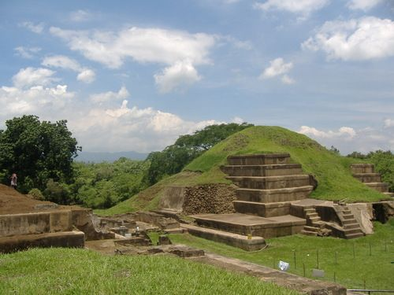
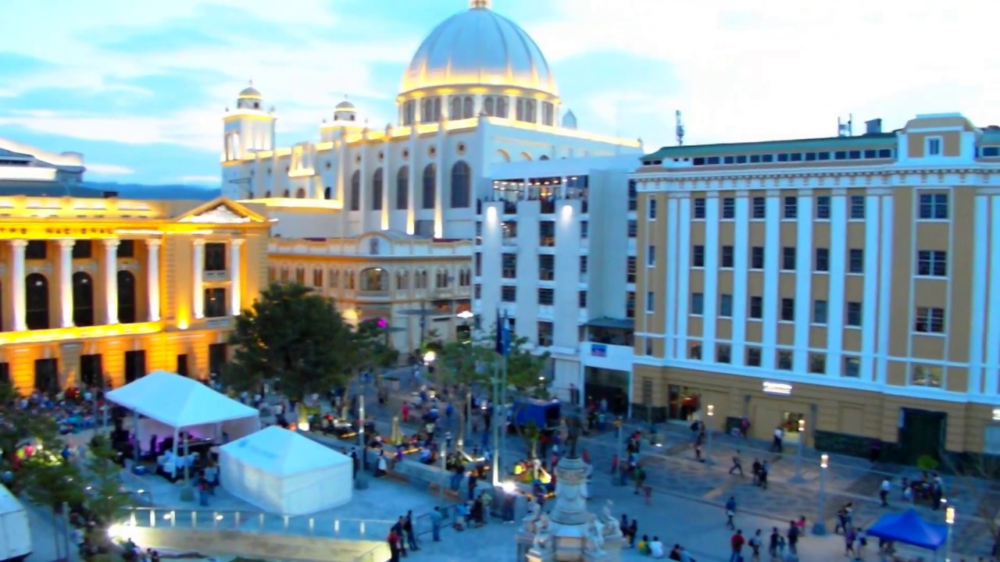
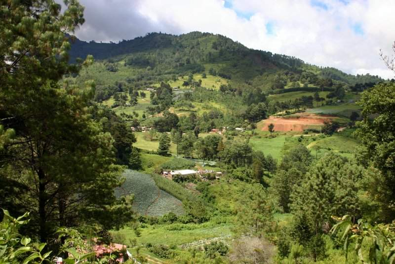

Datos principales:
Extension territorial: 21 041 km²
Moneda: Dolar Estadounidense
Forma de gobierno: Republica presidencialista
Censo (2019): 6 704 121 hab.
Independencia declarada en: 15 de septiembre de 1821 (199 años)
Extension territorial: 21 041 km²
Moneda: Dolar Estadounidense
Forma de gobierno: Republica presidencialista
Censo (2019): 6 704 121 hab.
Independencia declarada en: 15 de septiembre de 1821 (199 años)
San Salvador es uno de los 14 departamentos de El Salvador ubicado en la zona central. Su área es de 886,15 kilómetros cuadrados y su población es de 2,750,600 habitantes.
La civilización de El Salvador data de la época precolombina, alrededor de 1500 años A.C., según lo evidencia las ruinas de Tazumal y Chalchuapa. Los primeros habitantes fueron los Pocomames, Lencas, y Pipiles, que se asentaron en las zonas centrales y occidentales del país a mediados del Siglo XI. El Almirante Español Andrés Niño condujo una expedición a Centro América y desembarcó en la Isla Meanguera, localizada en el Golfo de Fonseca, el 31 de mayo de 1522. Este fue el primer territorio salvadoreño visitado por los españoles.
En junio de 1524 el Capitán Español Pedro de Alvarado empezó una guerra de conquista contra Cuzcatlán (tierra de cosas preciosas) que estaba poblada por las tribus nativas del país. Después de 17 días de sangrientas batallas muchos nativos y españoles murieron, incluyendo al jefe indígena Atlacatl. Pedro de Alvarado derrotado y herido en su cadera izquierda, abandonó la pelea y se retiró a Guatemala, comisionando a su hermano, Gonzalo de Alvarado, a continuar con la conquista de Cuzcatlán. Posteriormente, su primo Diego de Alvarado estableció la villa de San Salvador en abril de 1525, en un sitio llamado La Bermuda, cercano a la ciudad de Suchitoto. En 1546, Carlos I de España le otorgó a San Salvador el título de ciudad.
Durante los años siguientes, el país evolucionó bajo dominio español. Hacia fines del año 1810 surgió un sentimiento de libertad entre los pueblos de Centroamérica y el momento de romper las cadenas de esclavitud llegó en la madrugada del 5 de noviembre de 1811, cuando el Sacerdote José Matías Delgado, replicó las campanas de la Iglesia La Merced en San Salvador, haciendo un llamado a la insurrección. Después de muchas luchas internas, se firmó el Acta de Independencia de Centroamérica en Guatemala, el 15 de septiembre de 1821. Este día conmemoramos el Día de la Independencia de nuestra tierra Cuzcatleca.Fechas Importantes
1958: El Salvador y Guatemala invitan a Honduras, Nicaragua y Costa Rica a decidir la integración de una Asamblea Constituyente dentro de la proyectada Federación Centroamericana (29 Agosto).
Joya de Ceren: El sitio arqueológico Joya de Cerén se ubica al sur del actual caserío con el mismo nombre en el municipio de San Juan Opico, La Libertad. Este sitio es muy importante ya que comprende los restos de la aldea prehispánica mejor preservada en Mesoamérica. En 1993, fue declarado Patrimonio de la Humanidad por la UNESCO, por ser el único sitio arqueológico en El Salvador con evidencias de vida cotidiana de los habitantes de Mesoamérica de hace de 1600 años así como por su excelente estado de preservación de la botánica y fauna antigua, y por ser una fuente de valor sobresaliente desde el punto de vista de la historia, arte y ciencia.
Centro Historico de San Salvador: Comprende el área donde se inició la expansión de la ciudad capital de El Salvador desde el siglo XVI. Las edificaciones originales de la colonia española fueron en su mayor parte destruidas por desastres naturales a lo largo de los años, y los inmuebles notables que sobreviven fueron erigidos a finales del siglo XIX, e inicios del XX. Además, el lugar fue durante mucho tiempo el centro de poder político, económico y religioso del país.
Cerro El Pital: El cerro El Pital es una montaña transnacional, ubicada exactamente en la frontera entre El Salvador y Honduras. El Pital es la cima más alta y elevada de El Salvador y la tercera de Honduras. Tiene una elevación de 2,730 metros sobre el nivel del mar. Además de clima fresco, El Pital tiene un bosque húmedo conformado por árboles como pino, roble, encino y ciprés.
